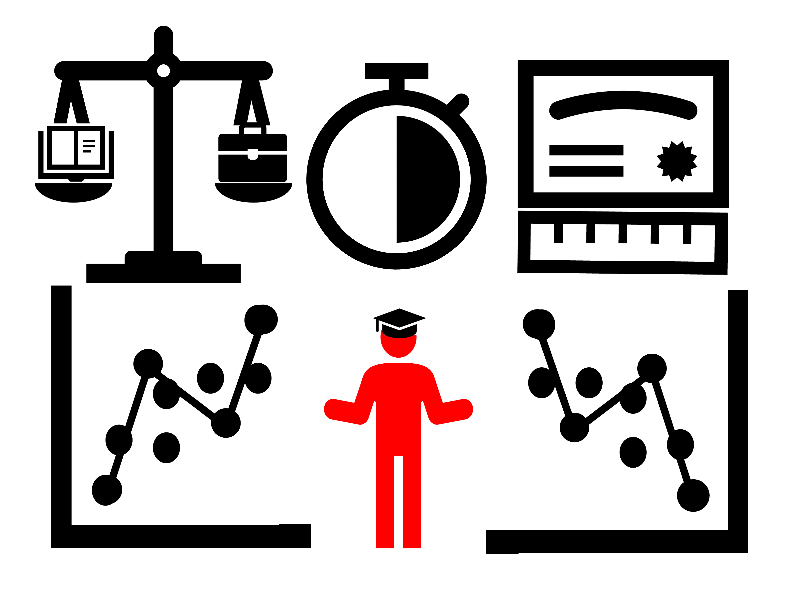
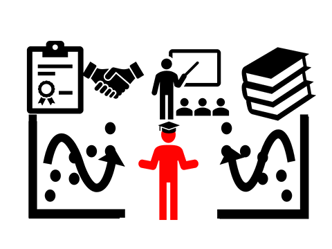

This paper examines the effect of working while in college using two approaches: the effect of working versus not working, and the effect of working different numbers of hours. Many students divide their time between school and employment, creating a possible tradeoff between gaining work experience and reducing the time available for learning. Using longitudinal survey data and propensity scores, the paper considers outcomes such as GPA and time to degree completion.

The returns to education literature has consistently found positive wage effects from additional years of schooling, although much of the evidence relies on restricted samples or non-U.S. educational systems. This paper revisits the question using a unique sample of twins from the Midlife in the United States survey. Employing a within-twin fixed effects model, the estimated return to an additional year of education ranges from 7.2% to 7.7%, slightly below the widely cited estimates of Ashenfelter and Krueger (1994) and Ashenfelter and Rouse (1998). The analysis also considers degree attainment and finds substantial completion effects. Spending time in college without obtaining a degree produces little wage benefit, while bachelor’s and post-bachelor’s degrees are associated with considerably higher earnings. Overall, the findings support the importance of non-linear degree completion effects in explaining earnings variation. Although the estimated returns are slightly smaller than the classic estimates, they remain within a comparable range.

Education plays a vital role in shaping society, making it essential to evaluate policies for their effectiveness. Effective policies should boost student success rather than hinder students' progress or waste resources. The Every Student Succeeds Act (ESSA), signed into law in 2015, aimed to address the shortcomings of its predecessor, the No Child Left Behind Act (NCLB). NCLB was extensively researched and criticized for its strict national accountability requirements. In contrast, ESSA shifted the burden of the accountability determination to the states; however, the effectiveness of ESSA remains under-researched. This paper aims to evaluate the ESSA’s effect on student performance by leveraging variation in state implementation timelines. I develop a cohort-based model integrating differences-in-differences and event study methodologies. Student performance data includes National Assessment for Educational Progress (NAEP) and ACT/SAT scores from 2006 to 2022 across all 50 states. Results indicate mixed outcomes: insignificant positive effects on college entrance exams and insignificant negative effects on fourth and eighth graders. The lack of statistically significant improvements suggests that ESSA has not yet achieved its goal of improving education outcomes.
Undergraduate economics degrees often leave students unprepared for graduate study in the same discipline. This paper describes the disconnect between undergraduate and graduate-level economics degrees. The disconnect is mathematics. A majority of economic Ph.D. programs require applicants nearly complete a mathematics minor. However, few undergraduate programs require more than one calculus course. Students in undergraduate degrees that prepare them for graduate programs end up enrolling in and completing a higher-tier program resulting in benefits to earnings and employment. Therefore, I am suggesting modifying the current economics curriculums to cater to a variety of student interests. Depending on the desired use of their degree, students could choose between a less technical business or law track and a high-technical graduate track. This plan would remedy the missing undergraduate-to-graduate link without losing benefits to the current students.
Titles: